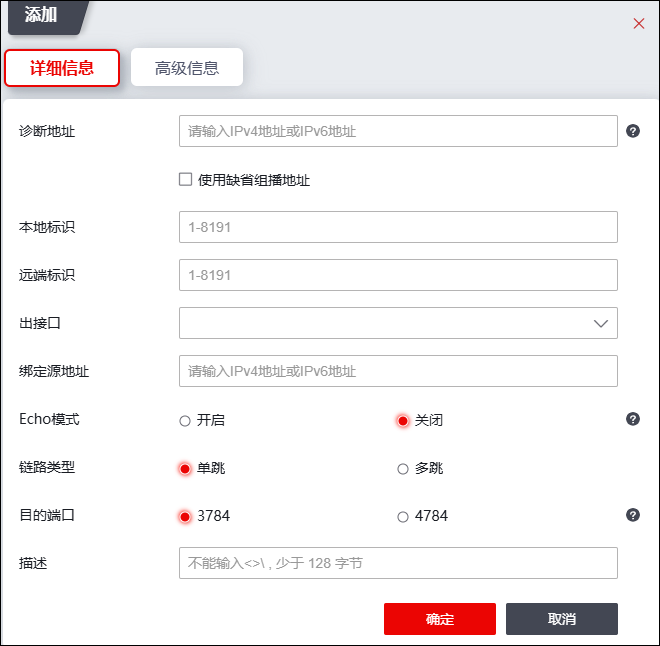
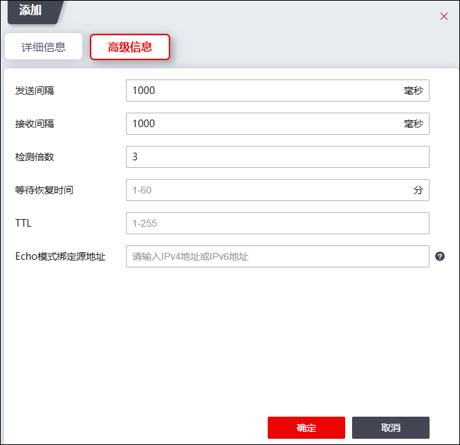

在IP链路上建立BFD会话，利用BED检测机制快速检测故障，BFD支持IPv4和IPv6链路的单跳检测和多跳检测。BED单跳检测是指对两个直连系统进行IP连通性检测，“单跳”是IP链路的一跳，即直连的链路；BED多跳检测是指BED可以检测两个系统间的任意路径，这些路径可能跨越很多跳，也可能在某些部分发生重叠。
| 步骤1 | 选择 。 |
| 步骤2 | 添加BFD会话。 |
1）点击“添加”，配置“详细信息”，如下图所示。

在设置详细信息时，各项参数的具体说明如下表所示。
参数 |
说明 |
|---|---|
诊断地址 |
设置探测的目的地址。 |
使用缺省组播地址 |
在探测对端无IP地址的接口状态时，需要将探测地址指定为组播地址。BFD会话探测地址为多播地址时必须指定本地及远端标识符。配置组播地址，参见 全局配置。 |
本地标识 |
设置本地标识符，取值范围：1-8191。 |
远端标识 |
设置远端标识符，取值范围：1-8191。 |
出接口 |
设置BFD会话绑定的出接口。 |
绑定源地址 |
设置BFD报文的源地址。 |
Echo模式 |
选择是否开启Echo模式，开启时仅支持单跳链路模式。 |
链路类型 |
Echo模式关闭时，链路类型可选择单跳链路或多跳链路。 |
目的端口 |
选择链路类型对应的目的端口。 目的端口与链路类型无强制关联。 BFD会话的目的端口可配置为3784和4784。不指定目的端口情况下根据BFD会话的链路类型选择，当链路类型为单跳时，目的端口可选择3784，链路类型为多跳时，目的端口可选择4784。链路类型默认为单跳。 |
描述 |
输入其他信息。 |
2）配置“高级信息”，如下图所示。

在设置高级信息时，各项参数的具体说明如下表所示。
参数 |
说明 |
|---|---|
发送间隔 |
设置BFD报文发送间隔，依据发送间隔周期性的发送BFD报文。取值范围：5-1000，整数。 |
接收间隔 |
设置BFD报文接收间隔，依据接收间隔周期性的发送BFD报文。取值范围：5-1000，整数。 |
检测倍数 |
设置本地检测倍数。取值范围：3-50，整数。 |
等待恢复时间 |
设置BFD会话的等待恢复时间。取值范围：1-60。 如BFD会话发生振荡，则与之关联的应用将会在主备之间频繁切换。为避免这种情况的发生，可以配置BED会话的等待恢复时间WTR。当BED会话从状态Dow变为状态时，BED等待WTR超时后才将这个变化通知给一层应用。 |
TTL |
设置BFD报文的生存时间。取值范围：1-255。 |
ECho模式绑定源地址 |
设置ECho模式绑定源地址。如echo报文源地址和目的地址相同，未避免转发设备不转发此类报文，可指定源地址为本设备上不存在的地址。 |
| 步骤3 | 点击【确定】，完成BFD配置。 |